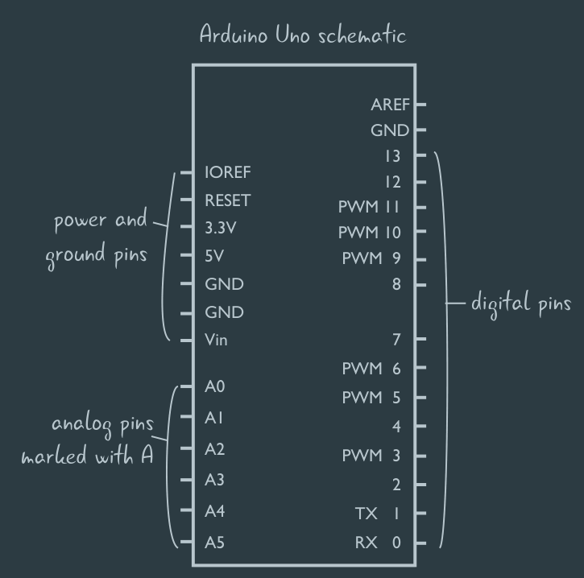

嵌入式的既往笔记
以前的所有关于EE的笔记，关于集总参数电路，关于arduino……24年11，12月左右均来自……那是我逝去的青春……？不，现在我也过得挺好。今天让AI帮我部署了CircuitPython，才发现我对之前的东西早已忘光了，而AI快速地把固件烧写、部署、代码编写这一套几分钟就做完，这实际上很打消我自己去把握技术细节的热忱…虽然我在嵌入式上并没有志向，但这种倾向是不合适的，丢掉了自己的主体性了。
嵌入式 #cheetsheet 电学术语对照表
-
1
2
3
4
5
6
7
8
9
10
11
12
13
14
15| **中文** | **英文** | **单位** | **符号** |
|---|---|---|---|
| **电压** | Voltage | 伏特（Volt, V） | $ U $ 或 $ V $ |
| **电流** | Current | 安培（Ampere, A） | $ I $ |
| **电阻** | Resistance | 欧姆（Ohm, Ω） | $ R $ |
| **功率** | Power | 瓦特（Watt, W） | $ P $ |
| **电容** | Capacitance | 法拉（Farad, F） | $ C $ |
| **电感** | Inductance | 亨利（Henry, H） | $ L $ |
| **电荷** | Electric Charge | 库仑（Coulomb, C） | $ Q $ |
| **电导** | Conductance | 西门子（Siemens, S） | $ G $ |
| **频率** | Frequency | 赫兹（Hertz, Hz） | $ f $ |
| **阻抗** | Impedance | 欧姆（Ohm, Ω） | $ Z $ |
| **导纳** | Admittance | 西门子（Siemens, S） | $ Y $ |
| **磁通量** | Magnetic Flux | 韦伯（Weber, Wb） | $ \Phi $ |
| **磁场强度** | Magnetic Field Strength | 安每米（A/m） | $ H $ |EE 集总参数电路（Lumped parameter circult）的简介，以及基尔霍夫定律
- 电气工程和计算机科学一样，都有着多个抽象层，集总参数电路模型就是电气工程的第一个抽象层。
- 每个抽象层都会在真实世界的基础上做一定假设以简化问题（但要保证做这个简化不影响实际做出东西来）。集总参数电路模型有如下假设：
- 元件仅表现出特定的电学特性，如电阻就只关心它的电阻，它的产热，而不关心它产生的磁场等，就像力学里把物体抽象成质心
- 流入元件的电流总是等于流出元件的电流
- 电压需要被正确定义（这个底层似乎是说元件内部电场变化可以忽略）
- 信号速度远低于光速（这是说，集总参数电路模型不适用于高频电路，这里的频率是电流方向变化的频率，实际上这时候是分布参数电路）
- 基于集总参数电路模型的假设，有三个定律能够得到：
- 欧姆定律，这个谁都耳熟能详
- KVL（基尔霍夫电压定律）：环路的电压降为0，这里的环路是任意闭合环路，即使它包含其它环路
- KCL（基尔霍夫电流定律）：对任何端点，从它流入、流出的电流总和为0
- 此外，还有一些性质在实践中需要注意：
- 对于任何端点，和它直接相连的部分的导线（直到遇到元件），这些部分的电势都是相等的；实际搭建电路时，如果有多个电源，这些电源的GND需要连接在一起（称为共地），以提供统一的电位参照点（通常是GND，通常规定为0V）
- 上面一条也是说，对于一个端点，如果它和另一个端点之间是没有任何元件的，它们两个在计算时可以当成一个端点去看待
- 假设一个环路上有端点 $a,b,c$ ，有 $U{ab}+U{bc}=U_{ac}$ ，这体现电压降的路径无关性——两个点的电压只取决于这两点，和实际电流路径无关。
- 基于基尔霍夫定律，能够推导出初高中中学到的一些电路的性质，包括：
- 并联的两个电阻 $R_1,R_2$ ，它们的总电阻是 $\frac{R_1R_2}{R_1+R_2}$ ，它们上得到的电压是相等的，电流是不等的
- 设它们的电压电流分别是 $U_1,I_1,U_2,I_2$ ，总电阻为 $R$ ，总电压电流为 $U,I$
- 根据KVL，检查两个电阻组成的环路，能发现 $U_1=U_2$ ，检查其中一个电阻和电源的环路，能发现 $U=U_1$ ，因此 $U=U_1=U_2$ ，两个电阻上面的电压相同，均为总电压 $U$
- 根据KCL，能发现 $I=I_1+I_2$ ，根据欧姆定律，有 $\frac{U}{R}=\frac{U_1}{R_1}+\frac{U_2}{R_2}$ ，化简得到 $R=\frac{R_1R_2}{R_1+R_2}$
- 实际上，任意多个电阻并联时，有 $\frac{1}{R}=\frac{1}{R_1}+\frac{1}{R_2}+\dots+\frac{1}{R_n}$
- 串联的两个电阻 $R_1,R_2$ ，它们的总电阻是 $R_1+R_2$ ，它们得到的电流是相等的，电压是不等的
- 设它们的电压电流分别是 $U_1,I_1,U_2,I_2$ ，总电阻为 $R$ ，总电压电流为 $U,I$
- 根据KCL，检查电阻靠近电源一端的端点，能发现 $I=I_1$ ，检查两个电阻之间的端点，能发现 $I_1=I_2$ ，因此 $I=I_1=I_2$ （实际上，没有分支的电路的话电流处处相等）
- 根据KCL，有 $U=U_1+U_2$ ，根据欧姆定律，有 $IR=I_1R_1+I_2R_2$ ，化简得到 $R=R_1+R_2$
- 并联的两个电源 $U_1,U_2$ ，如果 $U_1 \neq U_2$ ，它们的总电压是无法计算的
- 设它们的电压电流分别是 $U_1,I_1,U_2,I_2$ ，总电压电流为 $U,I$
- 根据KCL，检查任一端点，有 $I=I_1+I_2$
- 根据KVL，检查两电源之间构成的环路，有 $U_1=U_2$
- 但因为实际上 $U_1 \neq U_2$ ，这里引入了矛盾，违背了理想电压源的定义
- 实际上，不能让两个电压不同的电源并联，即使是理想情况下也不能。两个相同电压的电源并联，总电压还是该电压，每个电源会分担一半的电流供应。如果考虑内阻的话则可以求出来，此时等效电压和外部电阻是相关的
- 考虑内阻时求法见此
- 考虑引入内阻 $r_1,r_2$ 的话，考虑外部电阻为 $R$ ，外部总电流为 $I$ ，两电池内部电流为 $I_1,I_2$ ，规定电源 $U_1$ 和 $r_1$ 的之间端点为 $a$ ， $U_2$ 和 $r_2$ 的之间端点为 $c$ ，正极并联连接点为 $b$ ，负极连接点为 $d$ ，有如下方程组：
- $U{ab}+U{bd}+U_{da}=0$ （一个电源和外部电阻的环路）
- $U{bc}+U{cd}+U_{db}=0$ （另一个电源和外部电阻的环路）
- $U_{cd}=U_1$
- $U_{da}=-U_2$
- $I=I_1+I_2$
- 观察和化简它，能得到一个三元一次方程组：
- $U_1=I_2r_2+IR=I_2r_2+(I_1+I_2)R$
- $U_2=I_1r_1+IR=I_1r_1+(I_1+I_2)R$
- 最终得到……我算不动了，这是GPT给的：
- $I_1 = \frac{U_1(r_2 + R_L) - U_2R_L}{r_1r_2 + r_1R_L + r_2R_L}$
- $I_2 = \frac{U_2(r_1 + R_L) - U_1R_L}{r_1r_2 + r_1R_L + r_2R_L}$
- $I_L = \frac{U_1r_2 + U_2r_1}{r_1r_2 + r_1R_L + r_2R_L}$
- 确实能求出一个等效电压，但我不想求了，唯一要注意的是这个等效电压和外部电阻是相关的
- 考虑引入内阻 $r_1,r_2$ 的话，考虑外部电阻为 $R$ ，外部总电流为 $I$ ，两电池内部电流为 $I_1,I_2$ ，规定电源 $U_1$ 和 $r_1$ 的之间端点为 $a$ ， $U_2$ 和 $r_2$ 的之间端点为 $c$ ，正极并联连接点为 $b$ ，负极连接点为 $d$ ，有如下方程组：
- 串联的两个电源 $U_1,U_2$ ，它们的总电压为 $U_1+U_2$ ；两个电源提供同样的电流
- 设它们的电压电流分别是 $U_1,I_1,U_2,I_2$ ，总电压电流为 $U,I$
- 根据KCL，检查电源靠外的端点，有 $I=I_1$ ，检查两个电源之间的端点，有 $I_1=I_2$ ，因此 $I=I_1=I_2$
- 根据KVL，有 $U=U_1+U_2$
- 并联的两个电阻 $R_1,R_2$ ，它们的总电阻是 $\frac{R_1R_2}{R_1+R_2}$ ，它们上得到的电压是相等的，电流是不等的
EE 为什么给LED供电时，需要串联电阻以限流
- LED的伏安特性曲线并非是线性的，在施加电压超过LED的前向电压后，LED的动态电阻会剧烈降低，如果不使用电阻保护的话，电源微妙的电压改变可能会导致巨大的电流（比如，在CRUMB中，3.3V前向电压的LED，在3.3V时电流只有1mA，但3.5V时就是20mA了）；使用电阻则能保证电流总是在合理的范围内，使得电源的电压能够在更大的动态范围上波动，避免损坏LED和电源。这就是电阻的作用——限流——通过分担电压以减少其他元件上的电压以限制电流。
EE 电压电流的假设方向和实际方向，以及什么是关联参考方向
- 尝试判断电路中某处的电压，电流的时候，我们有时候会假设电压、电流方向，它不一定是真正的电压、电流方向，实际方向需要看这里算出的电压、电流的正负值。
- 在假设方向时，我们通常都会假设电流方向和元件正极到负极的方向一致，这称为关联参考方向，即使对电源，也仍旧采用关联参考方向，此时绘制的电流方向是和实际电流方向相反的。使用关联参考方向的优势在于它使电压和电流的乘积直接代表功率——正的功率表示元件吸收的功率，负的功率表示元件发出的功率。
- 对每个分别的元件，我们都需要假设它电压电流的方向，即使它是已知的元件，比如电压源、电流源。
- 注意，对“实际”电流的方向，是假设为从电池的正极流向负极，即电势降低的方向，这个方向称为惯称电流方向。它和关联参考方向并不冲突，而是不同的约定。
EE 关于各种常见元件的伏安特性曲线
- 电阻， $V=IR$
- 电压为 $V_0$ 的理想电压源（内阻为0）， $V=V_0$
- 电流为 $I_0$ 的电流源（内阻为无穷大）， $I=I_0$
- TODO 其他的…？复杂喽
EE Arduino UNO的可用资源

| 类别 | 资源 |
| ————————- | ——————————————————————————————————————- |
| 处理器 | ATmega328P，8 位 AVR，16 MHz |
| 存储 | 闪存（程序代码）：32 KB，SRAM（内存）：2 KB，EEPROM（存储）：1 KB |
| 数字 I/O 引脚 | 14 个（D0–D13），其中 6 个支持 PWM（D3, D5, D6, D9, D10, D11） |
| 模拟输入引脚 | 6 个（A0–A5），10 位分辨率（0-1023） |
| 定时器 | Timer0：8 位，用于millis，micros，delay，支持D5，D6 |
| | Timer1：16 位，可用于精确定时或较复杂的控制（如伺服Servo库），支持D9，D10 |
| | Timer2：8 位，用于音频生成或简单的 PWM ，tone使用Timer2，支持D11，D3 |
| 通信接口 | 串口：1 个（D0=RX, D1=TX），I²C：1 个（A4=SDA, A5=SCL），SPI：1 个（D10-D13） |
| USB 接口 | 板载 ATmega16U2 用作 USB 转串口 |
| 电源选项 | USB 供电（5V）外部供电（通过VIN引脚或DC口）：7-12V（最大6-20V） |
| 输出电压 | 5V，3.3V（最大 50 mA） |
| 复位和指示灯 | 复位按钮，电源指示灯，内置 LED（连接D13） |- 上面中出现一些术语：
- 数字IO引脚：既能输入也能输出，只有两个状态——高电平和低电平表示1和0；PWM即脉冲宽度调制，能够模拟模拟输出，它的原理是快速调整电平，通过调整的频率去模拟模拟输出。同时PWM允许调整占空比以调整输出功率。
- GND：地线，通过VIN引脚供电时负极接到GND上，元件的负极也需要接到GND上，元件的正极则接到5V或3.3V引脚上
- 模拟输入引脚：能够输入模拟信号，其能够得到连接的电压，其中参考电压为5V，即输入的值为1023时表示电压为5V
- 定时器：提供定时器中断，允许进行PWM，定时等操作
- 串口：一种数据通信方式，通过数据线去逐比特传输，全双工
- I²C，SPI：也是通信方式，后面再说
EE 分析电路的KVL-KCL法，组件组合法，以及节点分析法
- 分析电路，即为确定每个元件上的电压、电流（称为支路变量）
- 最基础的分析电路的方法即直接使用KVL-KCL，对每个环路根据KVL列出方程，对每个节点根据KCL列出方程，再根据各元件的伏安特性曲线列出相应方程，解这个方程组即可确定所有未知量。
- 使用基尔霍夫法分析电路时，通常会遵循一些约定：
- 使用关联参考方向，即使是电源也是如此
- 使用KCL时，使用流出方向，各处流出方向的电流的和为0
- 使用KVL时，沿着环路的方向，若先遇到元件的正极，则该元件电压取正值；反之，则取负值
- 仅使用基尔霍夫定律解题会引入太多的变量，解它们是很复杂和繁琐的，有必要去优化。
- 组件组合法便是一个（临时）消除变量的方法，它允许将多个以特定形式连接的元件组合起来当作单个元件去看待，具体来说，有下面的这些组合法：
- 串联的电阻 $R_0,R_1,\dots,R_n$ ，等效于一个电阻 $R=R_0+R_1+\dots+\R_n$
- 并联的电阻 $R_0,R_1,\dots,R_n$ ，等效于一个电阻 $\frac{1}{R} = \frac{1}{R_0} + \frac{1}{R_1} + … + \frac{1}{R_n}$
- 串联的电压源 $V_0,V_1,\dots,V_n$ ，等效于一个电压源 $V=V_0+V_1+\dots+V_n$
- 并联的电流源 $I_0,I_1,\dots,I_n$ ，等效于一个电流源 $I=I_0+I_1+\dots+I_n$
- 组件组合法虽好，但只能处理简单的串并联，如果事情更复杂，就只能使用其他方法了。
- 一种更优越且更有实践价值的方法是节点分析法，节点分析法的要点在于，定义一个参考电势点（有时候称为GND，通常使用地线符号去表示它），定义其它端点相对于参考电势的电势作为未知量，求出这些端点的电势，便能够得到各元件上的电势差，即电压，它的正负号代表着电压的实际方向
- 节点分析法的基本流程是：
- 定义参考电势点（一般会使用电源的正负极，此时能直接得到另一端的相对电势，减少一个未知量；尽量选择计算最容易的节点，比如连接的元件最多的节点）
- 定义其它端点的相对电势为未知量
- 对这些端点使用KCL列出方程
- 在这些方程中，利用欧姆定律或元件的伏安特性将电流用电位差（即电压）去表示
- 求解方程组，计算出各端点的相对电势，进而求得各元件的电压、电流
- 节点分析法的优势在于其会减少未知量的数量（有多少个端点就有多少个未知量），而且节点分析法得到的方程组通常是线性方程组，能够让计算机去进行求解。
- 直接上视频吧。 https://www.bilibili.com/video/BV1PZ421n7rJ/?p=36
EE RTOS的原理
- RTOS是嵌入式操作系统，允许在嵌入式平台上进行任务调度，中断管理，内存调度等。就和在PC上编程一样。从应用程序的角度来看，应用程序通过库函数去与RTOS交互。
- 和桌面操作系统如Windows，Linux不同，RTOS是和用户的应用程序一起烧写到单片机上的，而非是先烧写OS到单片机上，然后再把应用程序当成“软件”去加载到单片机上供使用（其实也能这样）。从一个后端程序员的角度看来，RTOS与其说是像操作系统，不如说像是框架，就像Spring boot之于Java，负责脏活累活，让程序员专注业务。
- 一个可能马上就会感觉到的地方是，RTOS是基于底层的HAL去访问硬件的，因此它需要分别兼容Arduino和裸机，实际上并非如此。实际上，Arduino和裸机C/C++归根结底都会编译到同一套目标机器语言，因此，RTOS的实现上可以不关心当前使用的是Arduino和裸机C/C++，它直接建立自己的一套硬件抽象层，根据处理器的架构去操作硬件以和外界打交道，这套硬件抽象层更底层，更通用，可移植。RTOS的驱动程序则也是利用RTOS提供的这层硬件抽象层进行编码，而不关心Arduino或裸机代码提供的HAL。换句话说，这两个HAL是并行的，Arduino 和裸机 C/C++ 代码既可用自己的库函数去访问硬件，也可以通过 RTOS 提供的 API 来访问硬件（和RTOS的系统资源）。
- 然而，虽然RTOS不关心是Arduino还是裸机，但Arduino和裸机C/C++使用的编译工具链可能是不一样的，可能需要重新配置，但一般来说无需修改核心代码。
EE 什么是Arduino，它和直接使用C/C++编译到目标平台的区别
- 简而言之，Arduino是一整个单片机开发平台，它对目标平台的硬件进行抽象（因此它是硬件抽象层HAL，虽然不完全），允许使用同一套高抽象层级的代码和库函数去操作硬件（但这不是说Arduino代码是跨平台，可移植的！）。使用Arduino和直接使用C/C++编译到目标平台，更像是两种不同的程序框架——它们支持不同的库函数，不同的代码结构和抽象层次——它们终究都能编译到同一套的目标机器语言，只不过一个相对更抽象，一个则相对更底层。得益于此，许多库的实现是可以不关心当前是Arduino还是原生去提供功能的。
- 举例来说，arduino需要用户实现一个
setup函数和一个loop函数，前者执行一次而后者反复执行，而直接使用C/C++（或者其他能够编译到机器码的编程语言如Rust）的话，则是需要编写main函数作为程序的入口 - 当然，Arduino不止于此，它提供了方便的IDE以方便编写、编译、上传，调试代码，这里不表。
- 举例来说，arduino需要用户实现一个
- Arduino这层抽象层会让代码相对地远离底层硬件，因此性能可能会有一些降低。除了Arduino，单片机厂商也有其他手段以提供抽象层，如通过C库函数的形式，如ESP-IDF，它则和硬件更为接近，但开发也更为复杂。
- 简而言之，Arduino是一整个单片机开发平台，它对目标平台的硬件进行抽象（因此它是硬件抽象层HAL，虽然不完全），允许使用同一套高抽象层级的代码和库函数去操作硬件（但这不是说Arduino代码是跨平台，可移植的！）。使用Arduino和直接使用C/C++编译到目标平台，更像是两种不同的程序框架——它们支持不同的库函数，不同的代码结构和抽象层次——它们终究都能编译到同一套的目标机器语言，只不过一个相对更抽象，一个则相对更底层。得益于此，许多库的实现是可以不关心当前是Arduino还是原生去提供功能的。
EE 单片机的Hello World——用连接到D12的按钮控制D13上的LED灯的亮灭
- D13上的连接是容易理解的——直接利用端点的电流去给LED供电，因此D13设置成输出模式，连接是D13-LED-电阻-GND
- D12上则复杂一些，首先考虑，按钮所在引脚要识别按钮按下状态，而按下状态必定会由当前电平去表示，因此按钮所在引脚要设置成输入模式去得到当前电平
- OK，输入模式，这时候第一步想到的是，我直接D12-按钮-VCC不就行了？按钮抬起时，D12是低电平（这里是想当然了），按钮按下时D12和VCC同电势，因此就是高电平了。
- 但实际上不是这样的，按钮抬起时，即引脚没有连接到任何确定的电压源的时候，这时候称为悬空引脚（Floating Pin），悬空引脚的电平是不确定的，其值会被外界干扰，因此不能使用。
- 如何解决悬空引脚问题？只需要让引脚和VCC或GND连接起来就可以了！我直接D12-GND，然后D12-按钮-VCC，这时候我说，按钮抬起时D12是低电平，按钮按下时D12是高电平（再次想当然），这里有两个问题：
- 倘若直接把引脚和VCC或GND短接，那引脚就将始终是低电平或高电平
- 倘若这样连线，按钮按下时VCC和GND会直接短接，这会造成严重后果，可能会烧掉什么东西或闻到糊味儿。
- 因此，D12不能直接连接GND，D12需要先连接一个电阻，再连接到GND，以避免引脚和VCC/GND短接，同时也避免按下按钮时VCC和GND短接。
- 这时候又要问了——电阻本身不也会占用电压吗？为啥D12处能正常得到GND的电平？这是因为单片机的输入引脚的阻抗极大（通常在兆欧级别，但具体需参考datasheet），因此相对于输入引脚，电阻得到的电压微乎其微。
- 在这里，这个将D12的电平拉到GND的电阻称为下拉电阻（Pull-down Resistor）；这里也可以将电路设计成D12-电阻-VCC，这时候将D12的电平拉到VCC的电阻称为上拉电阻（Pull-up Resistor）。
- 下拉电阻和上拉电阻的阻值一般在1k欧到10k欧左右，常用的阻值是4.7k欧。如果电路在高噪声环境，阻值需要更小，如果是低功耗应用，需要选择更大的阻值。
- 最终，连接方式是D13-LED-电阻-GND，D12-下拉电阻-GND，D12-按钮-VCC。按钮抬起时，D12为低电平，按钮按下时，D12为高电平。
- 注意——许多单片机会内置上拉电阻。Arduino中，pinMode有个INPUT_PULLUP，它使用内置的上拉电阻，因此用户不需要再外接物理电阻了。
```c
void setup() {
pinMode(12, INPUT);
pinMode(13, OUTPUT);
}void loop() {
int x = digitalRead(12);
if (x == LOW) {digitalWrite(13, LOW);} else {
digitalWrite(13, HIGH);}
}1
2
3
4
5
6
7
8
9
10
11
12
13
14
15
16
17
18
19
20
21
22
23
24
25
26
27
28
29
30
31
32
33
34
35
36
37
38
39
40
41
42
43
- #EE 什么是单片机（Single-Chip Microcomputer）
- 单片机也叫MCU（Microcontroller Unit），指的是**集成在一个芯片上的微型计算机**，具体来说，它包括CPU、内存（RAM和ROM）、以及**外设**（比如定时器、ADC、UART等），这里虽然叫“外设”，但它其实是包含在芯片内部的。**单片机的型号（例如ATmega328P）是其精确的标识，不同型号的单片机性能和外设资源各不相同。**
- 注意，上面的**芯片**不是指的开发板（Development Board）——芯片是一个封装好的集成电路，从外界只能看到它的引脚，而开发板包括单片机，电源线路，USB接口，模拟、数字引脚等，**开发板的出现是为了方便用户进行开发和实验，但它并非是单片机本身**。比如，Arduino Uno是基于AVR单片机的开发板，而该单片机是ATmega328P单片机。
- 一般来说，开发板（包含原理图、PCB布局图、用户手册等）和单片机（包含数据手册datasheet等）都会提供自己的文档，理解这些文档对使用开发板和单片机至关重要。
- #EE Arduino Uno中有着特殊用途的引脚
- 有13个数字引脚，有6个模拟引脚（它们都能当作数字引脚使用），不能随便用，它们之中有的有特殊用途：
- D0（RX，Receive），串口通信（UART）中接受端
- D1（TX，Transmit），串口通信中发送端
- D3，D5，D6，D9，D10，D11支持PWM
- D2，D3支持外部中断
- D13会和一个LED灯连接
- A4（SDA，数据线），A5（SCL，时钟线）I2C通信
- #EE Arduino Uno 蜂鸣器钢琴
- 7个按键（非矩阵键盘）分别连接D2-D8，连接GND，蜂鸣器信号端连D11
- ```C
// C4-B4
const double OCTAVE_FOUR[] = {261.63,293.66,329.63,349.23,392.00,440.00,493.88};
void setup() {
Serial.begin(9600);
pinMode(11, OUTPUT);
for (int i = 2; i <= 8; i++) {
pinMode(i, INPUT_PULLUP);
}
}
void loop() {
int clickedBtn = -1;
for (int i = 2; i <= 8; i++) {
int res = digitalRead(i);
if (res == LOW) {
clickedBtn = i;
break;
}
}
if (clickedBtn != -1) {
Serial.println(clickedBtn);
tone(11, OCTAVE_FOUR[clickedBtn - 2]);
} else {
noTone(11);
}
}
EE Arduino 按钮切换灯亮灭
- 剧透：这玩意儿不trivial，为了进行软件滤波，必须用某种形式使用定时器，无论是使用millis，delay，还是直接使用定时器中断。但或许并不需要这么珍惜定时器资源……
- 初次会想着，这玩意儿不很简单吗？记录灯应该在的状态，每次按下时，切换该状态，并重设灯的电平。
- ```C
void setup() {
pinMode(13, OUTPUT);
pinMode(5, INPUT_PULLUP);
}
int state = LOW;
void loop() {
if (digitalRead(5) == LOW) {}state = !state; // C中，!是逻辑否操作，!100 == 0, !0 == 1 digitalWrite(13, state);
}1
2
3
4
5
6
7
8
9
10
11
12
13
14
15
16
17
18
19
20
21
22
23
24
25
26- 这个操作是不太合适的，它一发现按钮按下就马上进行操作，这时候我如果持续按按钮，D13的电平会**反复切换**，因此实际电平是高低电平的平均值，**LED灯亮度会变暗**，而且有时候会**按失败**，按失败这点下面再说。
- 这是因为，当前的代码直接粗暴地检查D5的状态，没有考虑到按下、抬起的情况，因此，**应当修改为检测上升沿（Rising Edge）或下降沿（Falling Edge）**——即原状态是低电平，现在状态是高电平这样。下面的代码去检查**下降沿**（因为抬起时高电平，按下时低电平）：
- ```C
void setup() {
pinMode(13, OUTPUT);
pinMode(5, INPUT_PULLUP);
}
int state = LOW;
void toggleLED() {
state = !state;
digitalWrite(13, state);
}
int lastLevel = -1;
void loop() {
int currentLevel = digitalRead(5);
if (lastLevel == currentLevel) {
return;
}
if (lastLevel == HIGH && currentLevel == LOW) {
toggleLED();
}
lastLevel = currentLevel;
} - 这样实现的话失败的比例变少了，但仍旧存在。这是因为有杂波——按钮按下时会有抖动：电平并不是马上就稳定到低电平，而是反复触发，这可能是按钮内部的弹跳，也可能是其他原因，总之不能直接这么操作。
- 解决方案可以是硬件上的也可以是软件上的，硬件上的话，就是给按钮并联一个电容去滤波，软件上的话，一个简单的解决方案是，检查到按钮被按下的时候，我delay一下，等杂波过去，然后再设置状态。按钮抖动的时间通常以毫秒记，所以这里延时10ms足够。
- ```C
int currentLevel = digitalRead(5);
delay(10);
// …1
2
3
4
5
6
7
8
9
10
11
12
13
14
15
16
17
18
19
20
21
22
23
24
25
26
27
28
29
30
31
32
33
34
35- 这个实现基本不会再有失败了。**但它使用了delay**，使用delay会阻塞占用CPU时间（而且内部会占用定时器）。delay内部使用了millis函数，我们可以直接在外部使用millis函数避免阻塞。
- ```C
void setup() {
pinMode(13, OUTPUT);
pinMode(5, INPUT_PULLUP);
}
int state = LOW;
void toggleLED() {
state = !state; // C中，!是逻辑否操作，!100 == 0, !0 == 1
digitalWrite(13, state);
tone(1, 1);
}
int lastLevel = -1;
int lastMs = -1;
int DEBONUCE_MS = 10;
void myLoop() {
int currentLevel = digitalRead(5);
int currentMs = millis();
if (currentMs - lastMs <= DEBONUCE_MS) {
return;
}
if (lastLevel != currentLevel && lastLevel == HIGH && currentLevel == LOW) {
toggleLED();
}
lastLevel = currentLevel;
lastMs = currentMs;
}
void loop() {
myLoop();
}
EE Arduino呼吸灯
- 呼吸灯这事儿倒很trivial——修改占空比即可，analogWrite函数就是为此而生的。
```C
void setup() {
pinMode(11, OUTPUT);
}void loop() {
for (int i = 0; i < 256; i++) {// 电压范围是 0 - 255 analogWrite(11, i); delay(10);}
for (int i = 0; i < 256; i++) {analogWrite(11, 255-i); delay(10);}
}1
2
3
4
5
6
7
8
9
10
11
12
13
14
15
16
17
18
19
20
21
22
23
24
25
26
27
28
29
30
31
32
33
34
35
36
37
38
39
40
41
42
43
44
45
46
47
48
- #EE 元件 四角按钮，相邻的两个引脚由开关控制，相对的两个引脚直接相连
- 
- #EE 元件 四位八段共阳极数码管
- {:height 380, :width 494}
- #EE 元件 8位移位寄存器 74HC595
- {:height 287, :width 551}
- {:height 222, :width 473}
- 移位寄存器是指，它既是寄存器，同时支持寄存的值进行左移右移，这样，便能够使用1bit的线传输8bit的数据，**时间换空间**。
- 74HC595对每一位，有**两个**寄存器——**移位寄存器和输出寄存器**，输入的数据根据时钟`SRCLK`输入到移位寄存器并进行一次**左移**，然后根据时钟`RCLK`去将移位寄存器的值拷贝到输出寄存器，即**锁存**。
- 74HC595可以级联——注意 $Q_{H'}$ ，它直接反映最高位的移位寄存器的值而非输出寄存器，因此**级联时不需要每八位去触发一次RCLK**。
- 注意：
- **SRCLR必须始终置为高电平，OE始终置为低电平才能写**。
- 给74HC595发送数据时，需要使用**大端序MSBFIRST**（注意这里的序指的是**比特序**而非**字节序**）——最大的bit是第一个传过去的，它初始是最后一位，每次新插入都会左移，直到达到最大的位。
- 有下面的引脚会常用：
- $Q_H,...,Q_A$ ：输出引脚，高位到低位
- $SER$ ：输入
- $RCLK$ ：时钟，上升沿加载移位寄存器的值到输出寄存器，即覆盖输出
- $SRCLK$ ：时钟，上升沿加载输入到移位寄存器，已有的值整体左移
- ```C
// 下面的代码利用8个LED灯去表示0-255的计数器
const uint8_t INPUT_PIN = 10; // SER
const uint8_t SAVE_CLK_PIN = 11; // RCLK
const uint8_t SHIFT_CLK_PIN = 12; // SRCLK
void setup() {
pinMode(INPUT_PIN, OUTPUT);
pinMode(SAVE_CLK_PIN, OUTPUT);
pinMode(SHIFT_CLK_PIN, OUTPUT);
}
void replaceValue(int value) {
digitalWrite(SHIFT_CLK_PIN, LOW);
// 该Arduino内置方法将一个字节写入指定引脚，第二个入参是时钟引脚
shiftOut(INPUT_PIN, SHIFT_CLK_PIN, MSBFIRST, value);
// 手动触发RCLK的上升沿
digitalWrite(SAVE_CLK_PIN, LOW);
digitalWrite(SAVE_CLK_PIN, HIGH);
}
void loop() {
for (int i = 0; i < 256; i++) {
replaceValue(i);
delay(500);
}
}
EE 为什么 仍旧需要门电路芯片和寄存器芯片，以及对它们的认识
- 一个疑问是，既然已经有了单片机了，怎么还需要这种基础的门电路芯片和寄存器芯片？直接用单片机不就行了吗？
- 我猜想一个原因是，单片机有几个引脚，就只能输出多少个二进制信号，而且这些二进制信号无法直接互相组合，比如做个三八译码器，理论上你能用三个引脚去控制八个LED是否发光，但结果呢？这三个引脚只能分别连接三个LED。其中信息量其实是相同的——控制八个中的一个，或者同时控制三个，但单凭单片机自己确实无法做到前者，需要各种门电路芯片和寄存器芯片做辅助，以及要辅以时序逻辑。
- 总之，门电路和寄存器芯片（基础逻辑电路）存在的必要和好处在于：
- 高性能，低延时，对高频应用，门电路比软件实现要快得多，因为门电路不需要像CPU那样进行指令的解码和执行，而且其执行是完全并行的，软件的优势在于通用性
- 信号（引脚）扩展，允许使用少量引脚控制大量外设，如移位寄存器，允许串行输入并行输出，一个引脚达到八个引脚的效果
- 降低程序复杂度，这个……后面再表。
- 芯片的输入电流极小，对大部分芯片来说，输入电流和输出电流是隔离的（通过晶体管），输出电流来自芯片自己的电源，这能让一个引脚能够处理更大的负载。
- 晶体管，撑起了大半个EE。
- 但一个有趣的事情是，芯片的输出极有时候在实际上可以是输入方。一个典型的例子是使用移位寄存器芯片驱动共阳极的数码管，此时输出极为低电平的时候，实际的电流流向是从数码管到寄存器输出口。这是可以用电势差去解释的。
EE 关于芯片内部的处理时间
- 如果时钟频率太高，芯片内部是有可能没处理完自己的业务的。时序芯片都会有自己的最大时钟频率，倘若时钟频率超出这个值，就会出现问题了。
EE 驱动LED亮有三种方式：
- VCC-LED-引脚，引脚设置为低电平（引脚称为下拉模式）
- 引脚-LED-GND，引脚设置为高电平（引脚称为上拉模式）
- 引脚1-LED-引脚2，两引脚一高一低（电势相同的话等同断路）
- 我们说到上拉，下拉的时候，说的都是电势。
EE 使用三个GPIO和三八译码器去驱动七段数码管（快速切换显示的LED）
-1
2
3
4
5
6
7
8
9
10
11
12
13
14
15
16
17
18
19
20
21
22
23
24
25
26
27
28
29
30
31
32
33
34
35
36
37
38
39
40
41
42
43```C
// NUM -> bits
const uint16_t NUMS[] = {
63,
6,
91,
79,
102,
109,
125,
7,
127,
111
};
void setup() {
pinMode(10, OUTPUT);
pinMode(11, OUTPUT);
pinMode(12, OUTPUT);
}
void printNum(int num) {
for (int i = 0; i <= 6; i++) {
if ((num >> i) % 2 == 1) {
digitalWrite(10, i % 2 == 1);
digitalWrite(11, (i >> 1) % 2 == 1);
digitalWrite(12, (i >> 2) % 2 == 1);
delay(1);
}
}
}
uint32_t lastMill = -1;
int lastNum = 0;
void loop() {
printNum(NUMS[lastNum]);
uint32_t nowMill = millis();
if (nowMill - lastMill >= 500) {
lastNum = (lastNum + 1) % 10;
lastMill = nowMill;
}
}
```EE 使用交流电而非直流电进行远距离输电的原因是，交流电能够使用升压器升高到极高的电压，从而减少输电中的电流以减少中途的损耗。
- 损耗的功率是 $P=I^2R$ ，和电流的平方成正比
- 交流电的缺点则是高频时会有额外的损耗，以及发电站并入电网时需要控制频率和相位的同步，复杂性较高。
EE 元件 MAX7219 8x8点阵或8个7段数码管驱动
- MAX7219内置8x8的RAM，它支持16位MSB的指令，高8位的低4位为指令（它称为addr，实在有点混淆人），低8位为指令的数据。MAX7219启动时需要执行众多配置（我一开始居然试图用按钮去触发时钟……madness），包括关闭关机模式，调整亮度，设置decode模式（Code B decode指它预先为七段数码管的每个数字都编好指令；no-decode即一位对应数码管的一个LED，或者点阵的一个LED），设置扫描限制（它需要按行刷新点阵，或按个刷新数码管，所以数量越多显示效果相对越差）
- MAX7219连接8x8点阵时，digit 0-digit 7分别为第1行到第8行。
- MAX7219可以级联，这建立在所有指令都是幂等的。方法是每次记录所有MAX7219的当前指令，每次有修改，就修改相应的指令，然后把所有指令重写一遍。
- 下面是初始化代码：
```C
void action(int addr, int data) {shiftOut(DIN_PIN, CLOCK_PIN, MSBFIRST, addr); shiftOut(DIN_PIN, CLOCK_PIN, MSBFIRST, data); digitalWrite(LOAD_PIN, LOW); digitalWrite(LOAD_PIN, HIGH);}
void setup() {
pinMode(DIN_PIN, OUTPUT); pinMode(LOAD_PIN, OUTPUT); pinMode(CLOCK_PIN, OUTPUT); action(0x0c, 0x1); // no shutdown action(0x0a, 0x04); // set light 0 - 15 action(0x09, 0); // no decode action(0x0B, 0x07); // no scan limit // 第0行用二进制显示数字1，第1行数字2，以此类推 for (size_t i = 1; i <= 8; i++) { action(i, i); }}
1
2
3
4
5
6
7
8
9
10
11
12
13
14
15
16
17
18
19
20
21
22
23
24
25
26
27
28
29
30
31
32
33
34
35
36
37
38
39
40
41
42
43
44
45
46
47
48
49
50
51
52
53
54
55
56
57
58
59
60
61
62
63
64
65
66
67
68
69
70
71
72
73
74
75
76
77
78
79
80
81
82
83
84
85
86
87
88
89
90
91
92
93
94
95
96
97
98
99
100
101
102
103
104- #EE 关于PWM的参数和原理
- 
- 参考资料：
- ATmega328P Datasheet
- [secrets-of-arduino-pwm](https://docs.arduino.cc/tutorials/generic/secrets-of-arduino-pwm/)
- PWM即脉冲宽度调制Pulse Width Modulation，使用周期性的数字信号去模拟模拟信号。PWM**从使用者（外界）看来**，有这些参数：
- 频率Hz，脉冲的频率，即每秒有多少个PWM周期（一个周期即从上升沿到下一个上升沿，或者从下降沿到下一个下降沿）。频率越高代表切换速度越快，越耗能（也就是说切换电平这个动作也会耗能）
- 占空比Duty Cycle，高电平在一个PWM周期（中所占的比例，占空比越大比例越大，50%时相等。占空比为1时即输出高电平，为0即输出低电平。占空比越高，**等效电压**越高
- 脉冲宽度Pulse Width，高电平的持续时间，频率-占空比-脉冲宽度之间任意两者可以计算出第三者。
- 周期Period，一个PWM周期的时间长度，频率的倒数
- 电压幅度Voltage Amplitude，高电平和低电平对应的电压
- 边缘特性Edge Characteristic，上升沿和下降沿的形状，通常不会是完美的方波
- 噪声Noise，**PWM总是会有一些噪声**
- PWM可以使用软件实现，但精度和稳定性会有问题，因此更多的是使用硬件PWM，要让硬件PWM工作，需要如下部分：
- 晶振Crystal Oscillator，晶振是MCU的时钟源，是整个系统时钟的基础，它并不属于PWM，但是是PWM的基础；晶振的频率通常是MHz，如16MHz。
- 预分频器Prescaler，对晶振的高频进行分频，分频后的结果即是**定时器的工作频率**，如分频比如果是256，则 $f_{\mathrm{定时器}}=\frac{16M\,\mathrm{Hz}}{256}={62.5k\,\mathrm{Hz}}$ 。预分频器的实现可以通过计数器，即检测到特定数量的时钟脉冲后复位，并输出一个脉冲。
- 定时器Timer：定时器是一个计数器，以工作频率递增；通常会使用定时器来代指PWM，而定时器只是PWM的一个关键组成部分。定时器一般有8位和16位。定时器可以设定为向上计数Up Counting，向下计数Down Counting和双向计数Up-Down Counting
- 注意，这里的计数法和PWM周期没有直接关系；比如假设工作模式是达到比较值后清零定时器，并翻转电平，这时候两次定时器清零后才是一个完整的PWM周期；假设工作模式是达到比较值后翻转，达到最大值，上溢后再次翻转，这时候一次定时器清零就是一个完整的PWM周期。显然，**前者的占空比总是50%，后者可以通过调整比较值去调整占空比**。
- 比较器Comparator：比较定时器和**比较值**，即在软件中规定的一个值，计数器达到比较值时，能够做特定操作，如清零定时器，翻转电平（并清零定时器或者继续计数）等；这里做的操作代表的就是定时器的**工作模式**。对特定的操作，调整比较值可以调整输出的频率和占空比。
- 考虑8位定时器向上计数，比较值设置为最大值（因此上溢时翻转电平），此时这时候每256x2个定时器周期等于一个PWM周期，定时器工作频率是 ${62.5k\,\mathrm{Hz}}$ ，因此有：
- $$f_{\mathrm{PWM}}=\frac{62.5k\,\mathrm{Hz}}{256 \times 2}=122\,\mathrm{Hz}$$
- 能够发现，**顶值越高，PWM频率越低**，该定时器最低只能设置122Hz的PWM频率。- 也能够发现，比较值越接近最大值，**在相同的比较值变化量下**频率的变化越小，反者来说，使用PWM输出这些频率时会相对来说更精确一些。
- 预分频器，计数方式，比较值都是可以调整的，因此**PWM频率和占空比均可被调整**。
- 工作模式大体分为两类——**PWM模式：调整占空比以模拟模拟电压；定时中断模式：调整频率以模拟特定频率波形（如音频，定时中断）**。
- **在Arduino中，每个定时器和两个引脚相连，它们能够有自己的比较值，这就是说，它们频率相同，但占空比可以不同。**。考虑Arduino Uno的Timer2，它是8位的。
- Timer2它有4个模式，前两种属于定时中断，后两者属于PWM模式（参照ATmega328P数据手册17.7节）：
- 正常模式，不设置比较值（或者说，比较值为最大值），溢出时中断；**无法输出硬件波形**，常用于定时执行任务、中断。硬要画出波形图的话，就是下面的CTC的图像比较值始终设为最大
- 正常模式没有参数，
- CTC模式（Clear Timer On Compare Match），到比较值时中断并清零；使用CTC模式允许通过调整比较值调整频率，但占空比始终为50%。
- CTC模式的参数为比较值
- 
- 快速PWM模式Fast PWM，从0到最大值，计数器大于等于比较值时翻转，上溢时翻转。
- 
- FastPWM的参数为比较值
- 
- 相位矫正PWM则是从0到最大值，再回到0，计数器越过比较值时翻转，因此总是每个周期中波形都是中心对称的
- 
- 相位矫正PWM的参数也为比较值
- 
-
- #EE 433MHz无线模块FS1000A
- 有个圆形元件的，更方的那个是发送端，长方形的那个是接收端，接收端中间两个都是输出引脚，它们是短接的。
- 这个无线模块使用的是ASK 调制，即通过振幅去调节输出，低电平时没有振幅，接收端只能看到杂波，高电平时有振幅，能看到接收端。但实际表现不是这样，实际表现是发送端设置为高电平后，接收端只有一瞬间看到高电平，然后又变回低电平。
- 所以关键问题在于，如何编码去传递信息，并避免杂波？
- #EE 舵机 SG90
- 舵机工作在50Hz下，调整占空比调整角度，下面是我准备使用的约定
- {:height 363, :width 445}
- {:height 222, :width 550}
- #EE #snippet/Arduino 两个74TC595芯片控制4个数码管
- 高8位的后四位用来选数码管，低8位用来对应数码管的各段。
- ```C++
#include <Arduino.h>
#include <LedControl.h>
const auto DIN_PIN = A0;
const auto RCLK_PIN = A1;
const auto SRCLK_PIN = A2;
// NUM -> bits, 1 == LIGHT
const uint8_t NUMS[] = {
63,
6,
91,
79,
102,
109,
125,
7,
127,
111
};
// 认为SER和单片机相连的这个595芯片是低8位，所以下面要先输入高8位再低8位
void replaceValue(uint8_t addr, uint8_t value) {
// 再输入高8位
shiftOut(DIN_PIN, SRCLK_PIN, MSBFIRST, addr);
// 先输入低8位
shiftOut(DIN_PIN, SRCLK_PIN, MSBFIRST, value);
// 手动触发RCLK的上升沿
digitalWrite(RCLK_PIN, LOW);
digitalWrite(RCLK_PIN, HIGH);
}
void printNum(uint16_t v) {
int n_0 = v % 10;
int n_1 = (v / 10) % 10;
int n_2 = (v / 100) % 10;
int n_3 = (v / 1000) % 10;
replaceValue(1, ~NUMS[n_0]);
replaceValue(2, ~NUMS[n_1]);
replaceValue(4, ~NUMS[n_2]);
replaceValue(8, ~NUMS[n_3]);
}
void setup() {
pinMode(DIN_PIN, OUTPUT);
pinMode(RCLK_PIN, OUTPUT);
pinMode(SRCLK_PIN, OUTPUT);
}
void loop() {
printNum((millis() / 100) % 9999);
}
EE 嵌入式开发中的I2C协议
- I2C（Inter-Integrated Circult）是低速（相对于SPI），半双工的通信协议，同样是一个主设备和一个或多个从设备进行通信，同样是主设备提供时钟信号。
- I2C只需要两个引脚，且增加从设备时仍旧只需要使用这两个引脚：
- SCL（Serial Clock Line，时钟线）：主设备生成的时钟信号用于同步，空闲时高电平
- SDA（Serial Data Line，数据线）：双向，主设备和从设备均通过该线去发送和接受数据；SDA空闲时是高电平的
- 主设备和从设备均使用SDA交互，其中，主设备通过设备地址去选择特定的从设备，只有对应设备地址的设备会响应主设备。设备地址通常是7位或10位。设备地址通常是硬编码在从设备中的，但也有能通过引脚去设置设备地址的。
- I2C比SPI更为复杂——它规定了主设备和从设备交互的格式，一个可能的交互过程如下：
- 主设备发送7位设备地址，以及一个读写控制位，0表示写，1表示读
- 所有从设备都会看到该地址，如果某个从设备发现地址和自己的地址匹配，它就发送一个ACK信号（实际上是把电平拉低）；否则发送NAK信号（实际上这里没有人做操作，SDA仍旧保持高电平）
- 主设备如果（在下一次时钟时）检查到ACK，则开始发送数据或接收数据；其中：
- 如果主设备发送数据，对每个字节，主设备使用SDA发送数据，并等待从设备发送ACK信号
- 如果主设备接收数据，对每个字节，主设备使用SDA接受数据，并发送一个ACK信号
- 通信完成后，主设备发送STOP信号，即将SDA拉高，表示I2C当前空闲
EE 嵌入式开发中的SPI协议
- SPI（Serial Peripheral Interface，串行外设接口）是高速全双工通信协议，用于主设备（Master）和一个或多个从设备（Slave）进行通信。SPI依赖主设备提供时钟信号，并且是全双工的。
- SPI需要四个引脚，它的原理是容易理解的：
- SCLK（Serial Clock）：主设备生成的时钟信号，主设备写和从设备读均依赖此时钟；主设备可以配置在何时采样，以及空闲时的电平（即时钟的极性CPOL（Clock Polarity）——空闲时的电平；和相位CPHA（Clock Phase）——在第一个沿还是第二个沿采样）。
- MOSI（Master Out Slave In）：主设备->从设备，主设备写
- MISO（Master In Slave Out）：从设备->主设备，主设备读
- SS（Slave Select）：用于选择从设备，每一个从设备都需要连接一个SS；SS通常为低电平有效。（显然这里能够用个移位寄存器啥的以减少引脚的使用hh）
- SPI高速，全双工，实现容易（也容易理解），但缺点是只能单对单通信，不能广播，以及多个设备时引脚占用多，而且传输距离较短。
本博客所有文章除特别声明外，均采用 CC BY-NC-SA 4.0 协议 ，转载请注明出处！